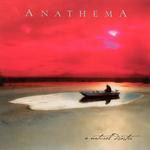

| Artist: | Anathema |
| Title: | A Natural Disaster |
| Label: | label code |
| Length(s): | 55 minutes |
| Year(s) of release: | 2003 |
| Month of review: | [12/2003] |
| 1) | Harmonium | 5.28 |
| 2) | Balance | 3.58 |
| 3) | Closer | 6.20 |
| 4) | Are You There | 4.59 |
| 5) | Childhood Dream | 2.19 |
| 6) | Pulled Under At 2000 Metres A Second | 5.23 |
| 7) | A Natural Disaster | 6.27 |
| 8) | Flying | 5.57 |
| 9) | Electricity | 3.51 |
| 10) | Violence | 10.45 |
The vocals at the begin of Balance strongly remind me of Thom Yorke (Radiohead). The incidental harmonies diminish that feel, but Cavanagh keeps sounding like Yorke. The use of keys and the relaxed feel of the track makes the semblance even stronger. This remains until the guitar breaks through two thirds through the track.
Closer starts gently, almost cold with the vocoder vocals. As the track moves on the guitar gains in momentum as the percussion increase the urgency, slowly building to a near guitar wall, led along the way by gentle keys. After the pinnacle is reached, the track builds down towards a gentle ending.
Are You There is another slow starter, but the clear guitar motif makes it different from before, although the lingering sounds are still present. Apart from that this track does not have the big climax, it remains gentle. Childhood Dream is sort of an intermezzo, with sonar like effects.
Pulled Under At 2000 Metres A Second opens with intense restrained vocals. The dragging guitar leads to the sudden yell and kick off, including frantic drumming. After this intensity we move into a middle section with husky whispers, key carpet, and more percussion, constantly feeling the tension that finally brings the return of the strong guitar and yell. Even though the restrained material before is beautiful, the combination of so much force and with a strong melody washes over one. Great stuff.
The title track surprises with female vocals, similar to those of Portishead's Beth Gibbons. This track leans more on vocal melody, only in instrumental sections does the guitar sweetly take over with melodic assistence of the bass. The fragility of the voice even better conveys intimacy. The guitar is now strumming, more than it is lingering, just sketching a melody filled by the vocals. Towards the end the instruments disappear, leaving only the female lead vocals, supported by multiple individual male vocals as backing.
Flying has a bit of a Radiohead feel, even though Porcupine Tree remains present too. This track to has a clear vocal melody, dominating except for the instrumental sections, where the guitar is rather clear. This track does not have the lingering feel of the earlier tracks. Neither is it as laidback, although the winding down is still there.
Electricity starts a piano vocal track. Not until half way through do percussion and a smaller string instrument come in, only to move away for the finish, with an unexpected push against the piano's strings.
Closer Violence starts with piano, picking up where Electricity left off. After over two minutes almost suddenly stops, directly followed up with guitar both lead and lingering sorts and percussion, pressing for a build up, almost as if wanting to make up for time lost. As the five minute line approaches all this violence dies down, and the piano returns to the floor, picking up the theme once again. With a break we move to a more sentimental feeling piano melody, which breathes an atmosphere at times close to the Twin Peaks theme by Angelo Badalamenti. Nice as that may be, it misses the expression of the rest of the material
In a way this release by Anathema can be seen as similar to Opeth's Damnation and more recent Porcupine Tree material. Another band homing in on this mix of progressive, experimental, esotheric and alternative music is Radiohead. There is one difference between those bands and this one though: Anathema manage to mix the softer new side with elements of the traditional harder edge (a chance not fully taken by Opeth), which increases intensity and impact. This creates a brew that is very potent. Prime candidate for album of the year.